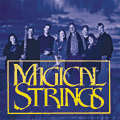

|

YULETIDE LIVE
Experience the magic of a live Celtic Yuletide Concert with this
beautiful recording of Magical Strings' 19th Annual performance
in Seattle. Hear the Boulding family's arrangements of haunting
carols from the Celtic tradition on harp, dulcimer, violin, 'cello,
harmonium and whistles, along with the heart-felt vocals of Julie,
William and Felicia, the charming voices of the children's choir,
and Brittany's stunning violin solo of Vivaldi's "Summer." You
can feel the floor-shaking hardshoe reel from the Raney Irish
Dancers, and sing-along with the audience on Yuletide favorites
like "Boar's Head Carol" and "All Through the Night." With this
festive spirit, we can, in Pam's words, take Yuletide "out into
the world, and fill the earth with this light and warmth that
radiates here tonight around us all. |
Recordings

YULETIDE LIVE

Out of Print |